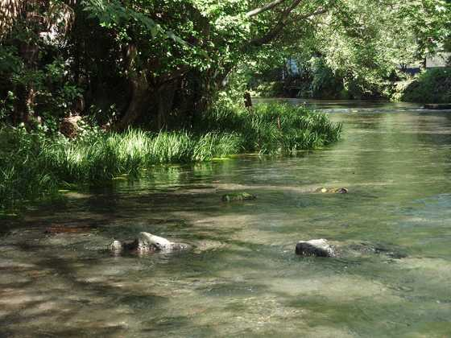
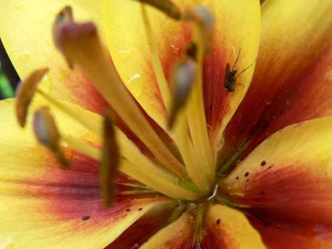
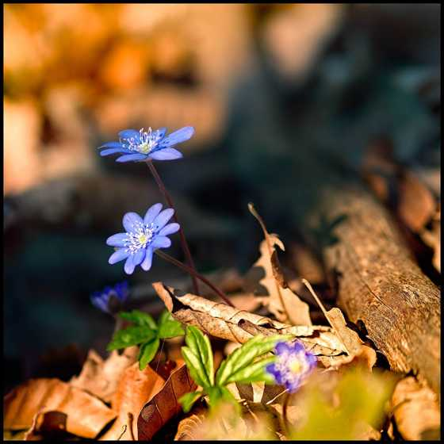
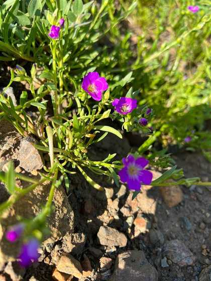
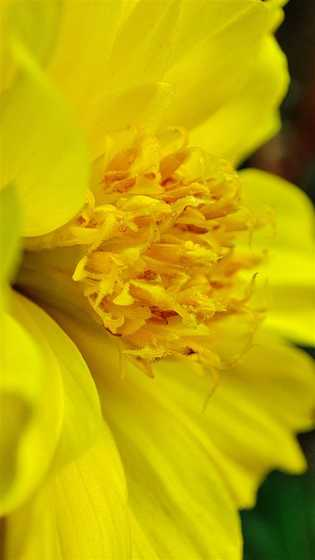
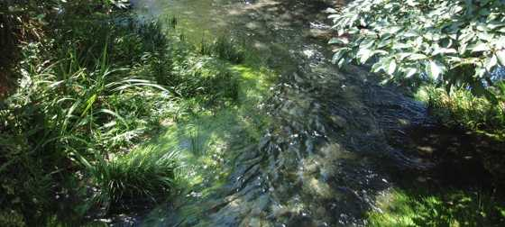
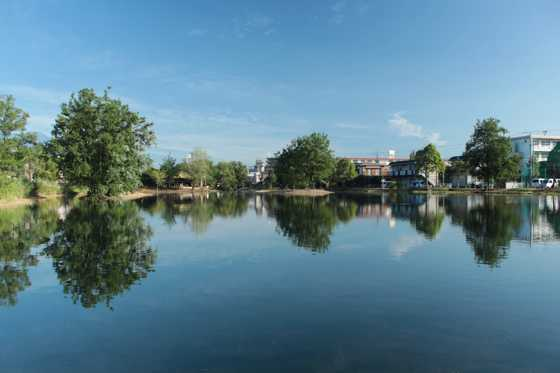

静岡県三島市安久
花と緑にかこまれて、
甘いひと休みを。
花と緑のカフェGuriGuri(グリグリ)は、2026年4月にオープンした、カフェと花・植物のお店です。
お店のこと
カフェの隣に、花と緑がある。
「花と緑のcafe GuriGuri(グリグリ)」は、2026年4月3日に三島市安久(函南塚本IC近く)でオープンしたお店です。開店告知の投稿によると、クレープ・ワッフル・ドリンクのカフェに加えて、花、観葉植物、果物、苗木も扱うとされています。Instagramでは、クレープやかき氷の投稿も見られます。
情報源: 開店告知の投稿(X) / Instagram
店名「グリグリ」の由来・オーナーの想いは確認できませんでした。このページの見出しや言い回しは制作側のイメージです。




口コミ(イメージ例)
こんなお声が届きそうです。
イメージ例
お花に囲まれて食べるクレープは、気分まで明るくなります。ちょっとした寄り道にぴったりです。
イメージ例
カフェで一息ついたあと、気になる観葉植物をゆっくり選べるのが楽しいです。
イメージ例
インターの近くなので、ドライブの途中に立ち寄れて助かります。駐車場があると安心です。
上記は制作側が作成したイメージ例で、実在のお客様の声ではありません。
アクセス・ご案内
函南塚本IC近くの、三島市安久。
| 所在地 | 静岡県三島市安久646-7 |
|---|---|
| 電話 | 準備中 |
| 営業時間 | 準備中 |
| 定休日 | 準備中 |
| SNS | Instagram @cafe_guriguri_mishima |
営業時間・定休日などは変更されることがあるため、最新情報はInstagramをご確認ください。

